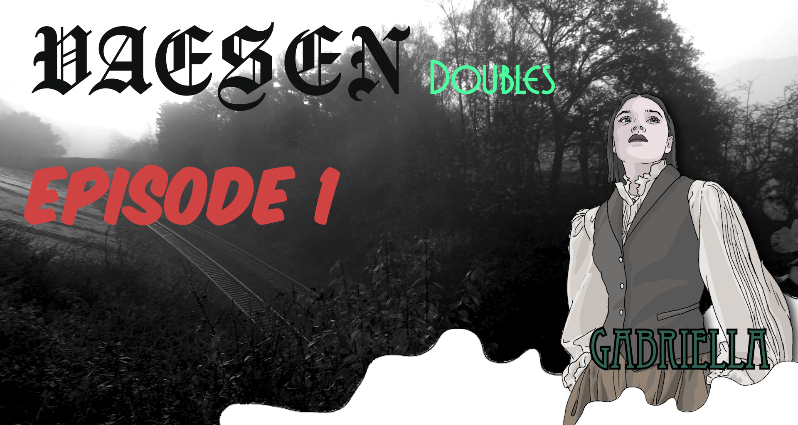
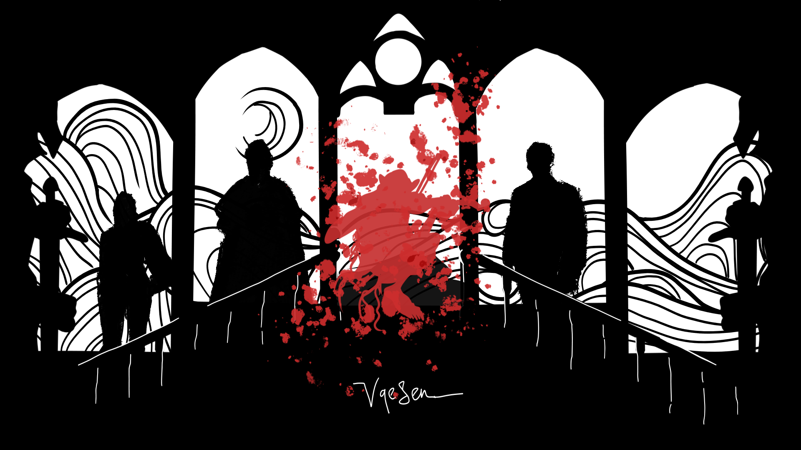
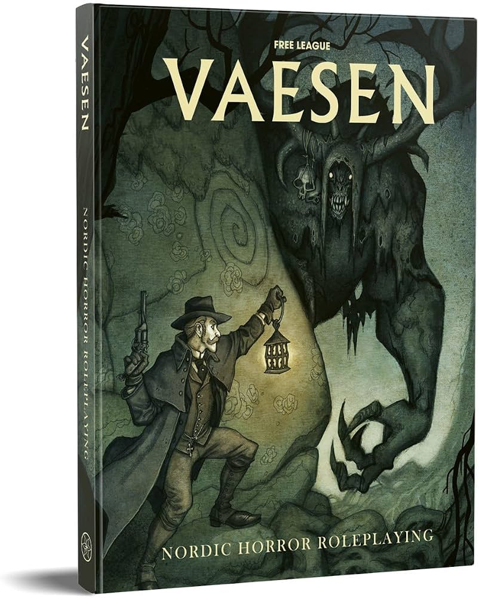
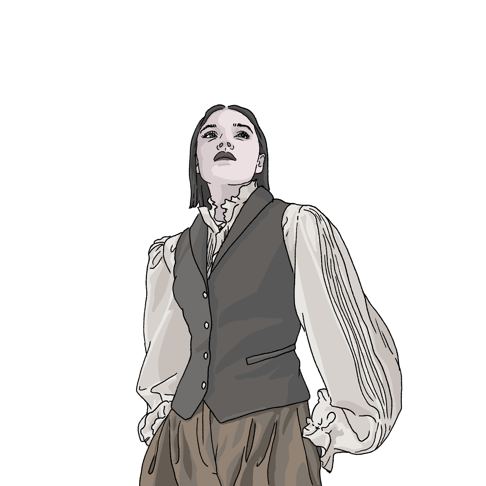
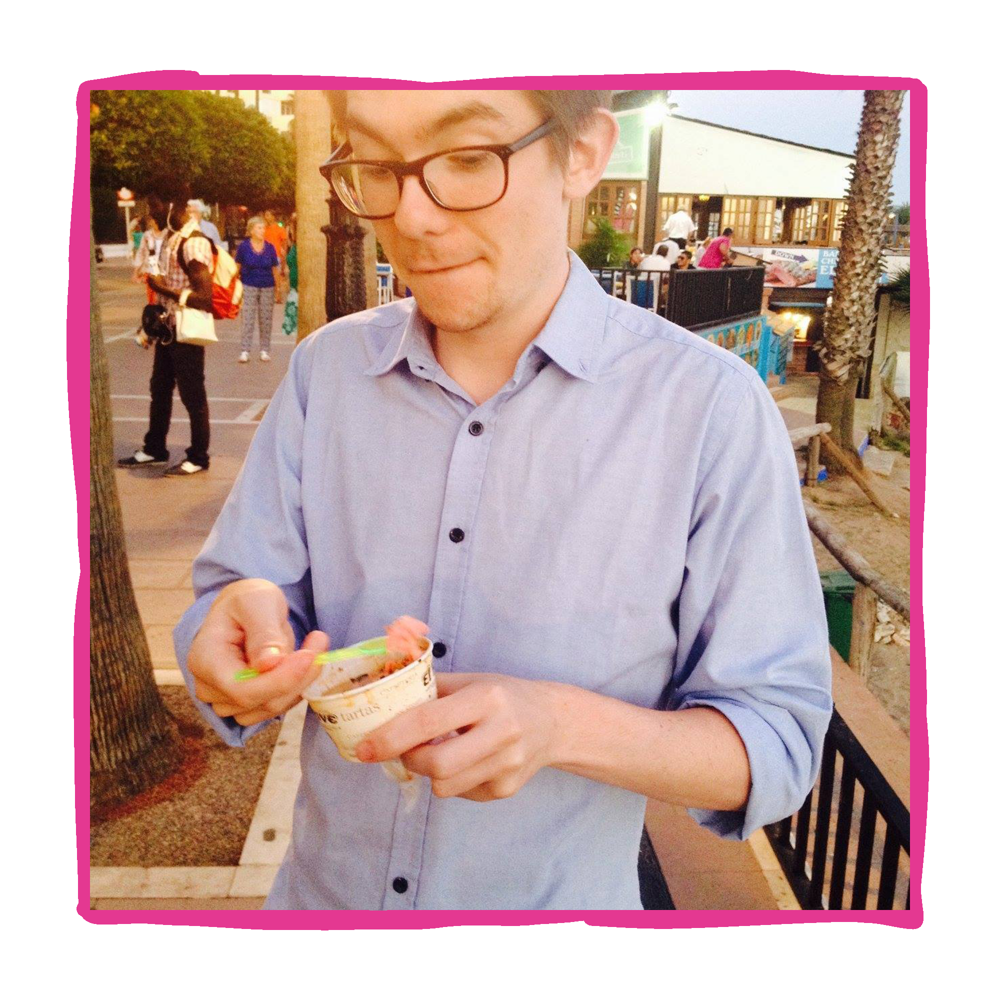
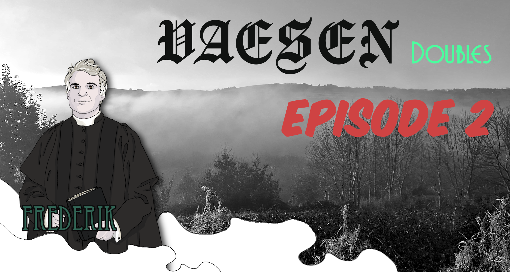
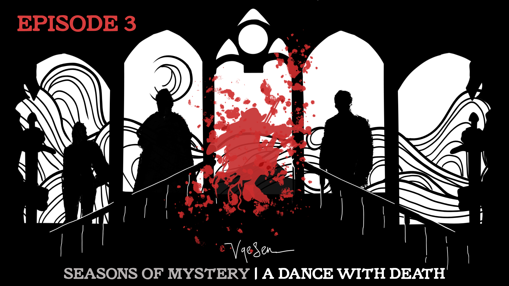

Doubles: Episode 1
The mystery begins.
Nordic folklore and mystery

Vaesen is a Nordic horror roleplaying game from Free League Publishing, inspired by Scandinavian folklore and the mysteries of the Mythic North. Players take on the role of investigators who uncover strange creatures, ancient traditions, and unsettling truths hidden just beyond the familiar. Follow our table through two unfolding Vaesen mysteries.


At the heart of our story are Gabriella and Frederick, investigators based in Uppsala, Sweden. As members of the Society, they have gained the Sight: the ability to perceive the vaesen hidden from ordinary eyes.
Alongside their fellow Society members, they travel through the Mythic North, tracking the creatures and mysteries that others cannot see.
Live-play schedule dates are listed on the main page.
Series one
A Vaesen mystery of mirrored identities, unsettling folklore, and a case that refuses to stay simple. As the investigators follow the clues, every answer raises another question.
A module from Melpomene Games, you can get this Vaesen mystery from DriveThruRPG

Sam
The mystery begins.

The consequences deepen.
Series two
Dance With Death is the spring mystery from Free League Publishing's Seasons of Mystery, a Vaesen campaign structured around four investigations, one for each season of the year. As winter gives way to spring, the Society must follow a trail of folklore, secrets, and danger where every revelation carries a cost.
You can pick up a copy of Seasons of Mystery from Free League Publishing.
The dance begins.
The mystery turns.

The final steps.
Series two
Fireheart is the summer mystery from Free League Publishing's Seasons of Mystery, a Vaesen campaign structured around four investigations, one for each season of the year. As spring gives way to summer, the Society must follow a trail of folklore, secrets, and danger where every revelation carries a cost.
You can pick up a copy of Seasons of Mystery from Free League Publishing.
The fire begins.
The mystery burns.